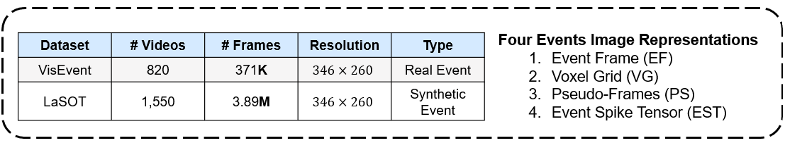
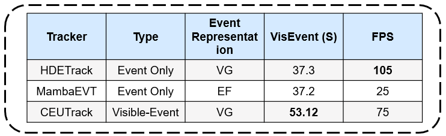

Objectives
1. Evaluate four event representations: Event Frame (EF), Voxel Grid (VG), Pseudo-Frames (PS), and Event Spike Tensor (EST).

2. Deploy them across several datasets and tracking models.

3. Propose a unified framework for fusing RGB and event data effectively.
Propose a Visible-Event Tracker that:
- Effectively leverages the strengths of both RGB and event modalities
- Maintains generalization across a wide range of event data representations
- Supports flexible integration of different event representation methods (e.g., VG, EF)
4. Benchmarks
- Conduct a comprehensive evaluation of 3 selected trackers using 4 distinct event representations
- Evaluation Metrics: Success (S), Normalized Precision (NP), and Precision (P)
- Provide practical recommendations for selecting event representations based on use case
- Provide Future Work